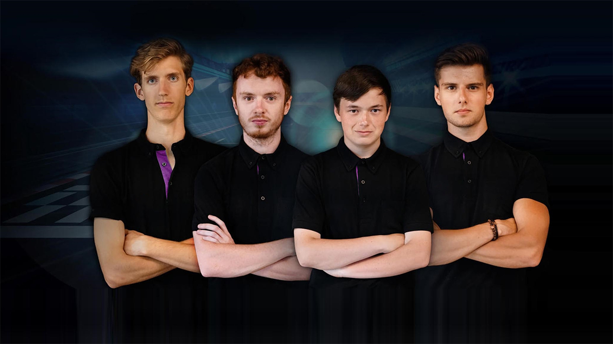

RGU Esports was founded in 2016 by a group of four individuals with a passion to be the best of the best. Starting with their favourite game of Counter Strike: Global Offensive, they wanted to form an official society at RGU in order gain a fifth member of their team and a backup squad.
With the ever-expanding popularity of gaming, the society quickly gained an exponential number of members with players in an ever-increasing library of games.
Gaining national recognition in 2018 for winning the United Kingdom CS:GO tournament; RGU esports has grown to become one of the most successful University based E-Sports groups in Britain.
With full teams and reserves for CS:GO, Call of Duty, R6: Siege, Dota 2 and Rocket League; RGU Esports is becoming a formidable force in the world of Esports.